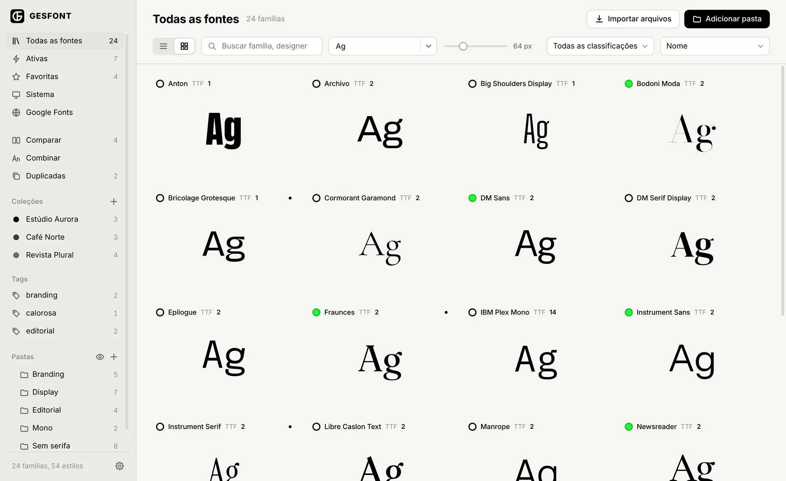
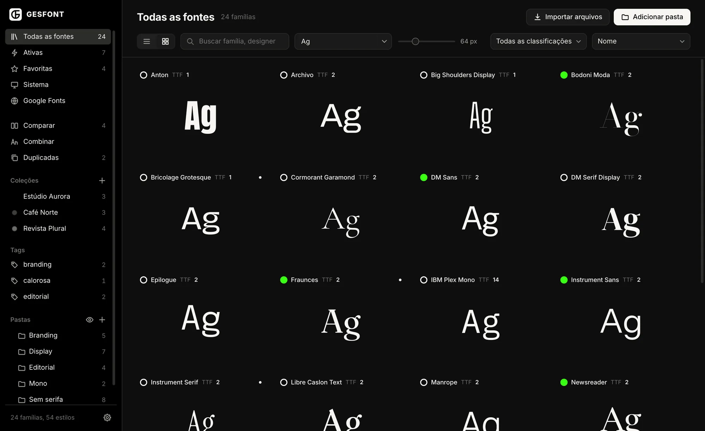

Uma pasta só para a sua biblioteca.
Na primeira abertura o GESFONT cria a pasta GESFONT no seu usuário. O que você organiza no app aparece no Finder, e o que você arrasta no Finder aparece no app.
- Subpastas viram uma árvore na barra lateral.
- Pastas do servidor ou do Dropbox são lidas no lugar, sem mover nada.
- Lista com texto longo ou grade com um glifo por família.

